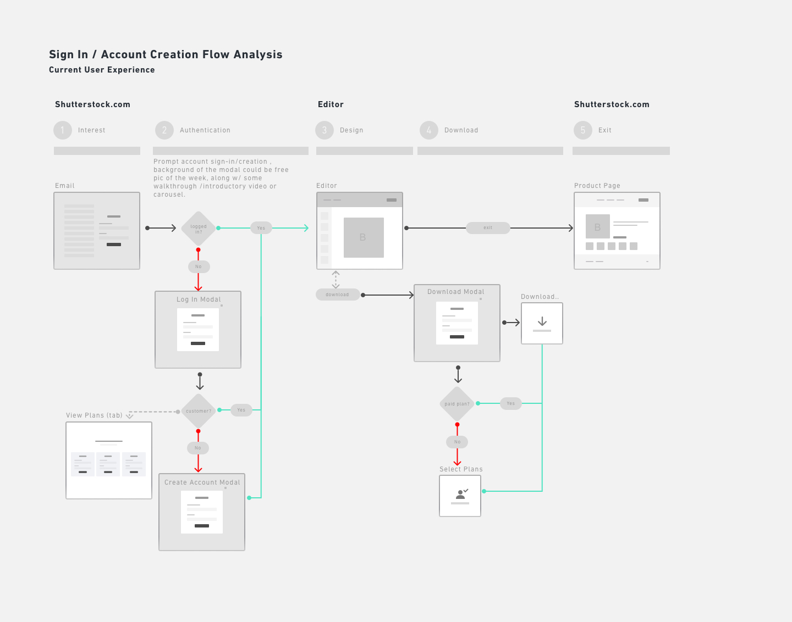
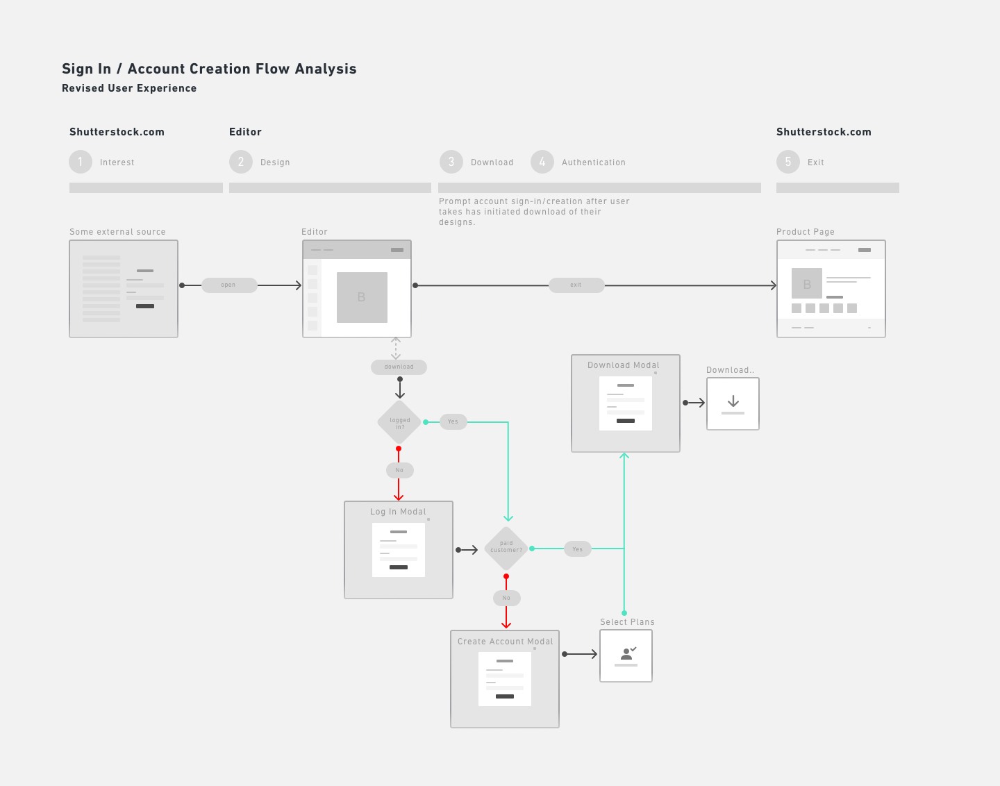
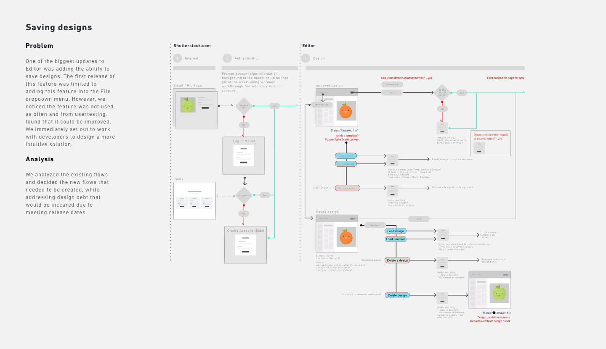
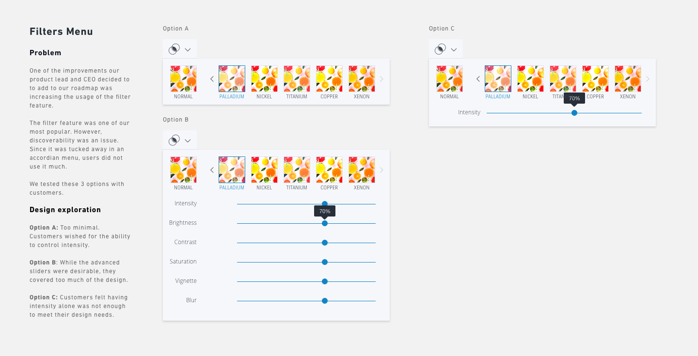
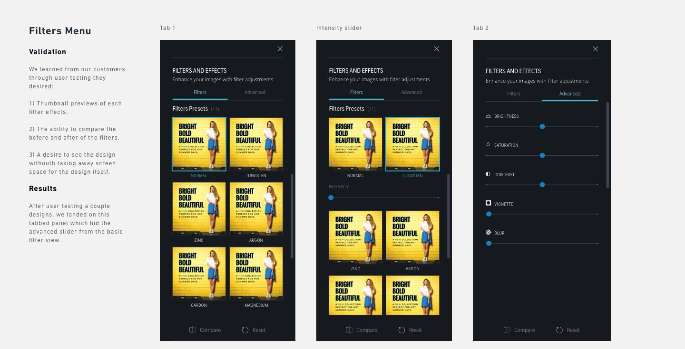
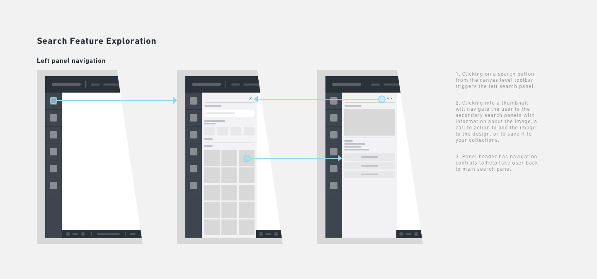
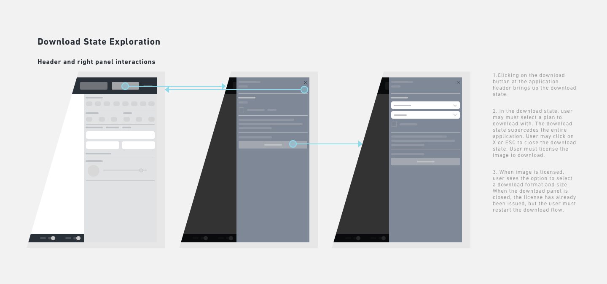
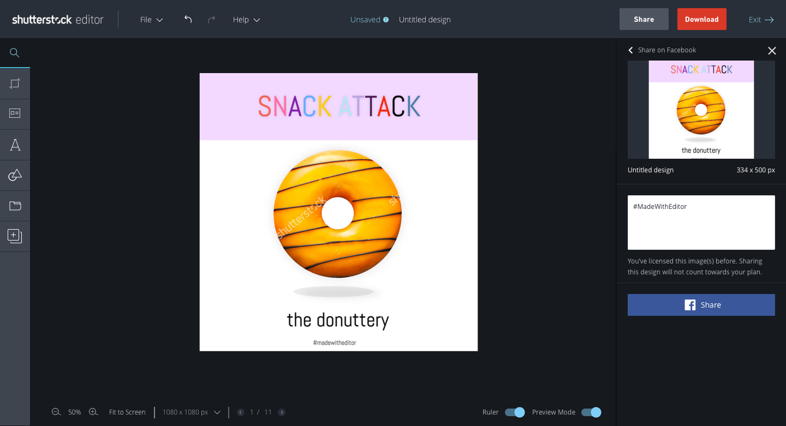

Editor is a browser-based design tool built for social media professionals and small business owners. I lead product initiatives to build our platform, creating our end to end flows and building out a scalable framework.
At the beginning of the year, the product owner and I focused on a few goals that aimed to:
1. Improve standalone app features by creating new sign in flows
2. Increase retention and engagement
3. Increase usage for features that directly impact download KPI
Objective: To audit and design new flows into the Editor platform
Editor launched into beta without account creation. Users had to create an account first through Shutterstock's core experience. Through user feedback, we found pain points in our user journey: the sign in process was an impediment to growing our user base.

I helped design new flows which enabled customers to explore Editor before creating new accounts or signing in.

Results: Overall usage of Editor increased by 180% since the feature launched. Downloads also increased by 15%.
Objective: To increase number of designs saved
A primary goal in our roadmap was to increase the number of saved designs in the application. Through research, we found strong correlation between number of saved designs with engagement/retention metrics, along with images downloaded. To promote stickiness and create a frictionless user experience, we added the ability to save designs in the app header.

The new feature enabled users to save within the header navigation area. In addition, we added auto-saving as an additonal method to further increase the number of designs saved.
Result: Our metrics showed that the new app header feature was a success and used by over 43% of users. It outpaced saving from the file menu by 50% while helping increase downloads by 8%.
Objective: Expand on our number one most used filter feature
As a goal for roadmap planning, we wanted to shore up our popular filters feature. Through research, we came to understand that discoverability was an issue. To solve for this problem, we did extensive user research and testing to learn what our customer wanted and where their painpoints were.

The new designs promoted the discovery of a variety of filters and offered power users, the ability to apply advanced settings. It also gave users a larger thumbnail preview of the filter effects.

Prototype we used to test one of our designs
Result: Our data indicated that the redesign helped increase usage by over 77% and helped increase downloads by 14%.
Objective: Increase app engagement and retention by improving search capabilities
Editor offered a basic search engine at the time of the beta launch. We noticed our users leaving the app to search on Shutterstock.com and returning only to design. To provide a more seamless experience, I worked closely with the search team to design an advanced search feature for Editor.

The new designs enabled the discovery of a variety of search filters and improved engagement in app, providing customers a more complete user experience.
Result: Search through advanced filters have continued to grow, leading to download improvements.
Objective: Improve the download process by creating a larger space for preview and plan for upsell paths.
To enable the eventual monetization goals of Editor, we needed to improve the download process, which was surfaced in the UI as a series of modals. We had to fix some legacy UX/UI issues where a modal was used to navigate between steps to download. The redesign would give users a larger image preview to encourage download completion.

The redesign accomplished several things. It reduced interaction complexity by removing unnecessary logic between two modes. In addition, we listened to our users and gave them a larger preview of their design, creating a frictionless downloading experience.
Prototype we used to test one of our designs
Result: While we are still monitoring KPIs, data collected thus far indicate an increase in number of downloads.
Objective: Improve the share experience, which was sub-optimal.
In this redesign, we learned through customer support that our share flow through a series of modals became a source of friction that decreased share KPIs. We prototyped several modes of sharing and found users liked the inlined approach the most.
When we finally decided to test using the right panel for the share state, we observed how users would interact with it. Should the panel persist when users clicked on objects in the design canvas? What should happen when the user clicked off?

Prototype we used to test one of our designs
Result: While we are still monitoring KPIs, data collected thus far indicate an increase in number of shares through this feature.